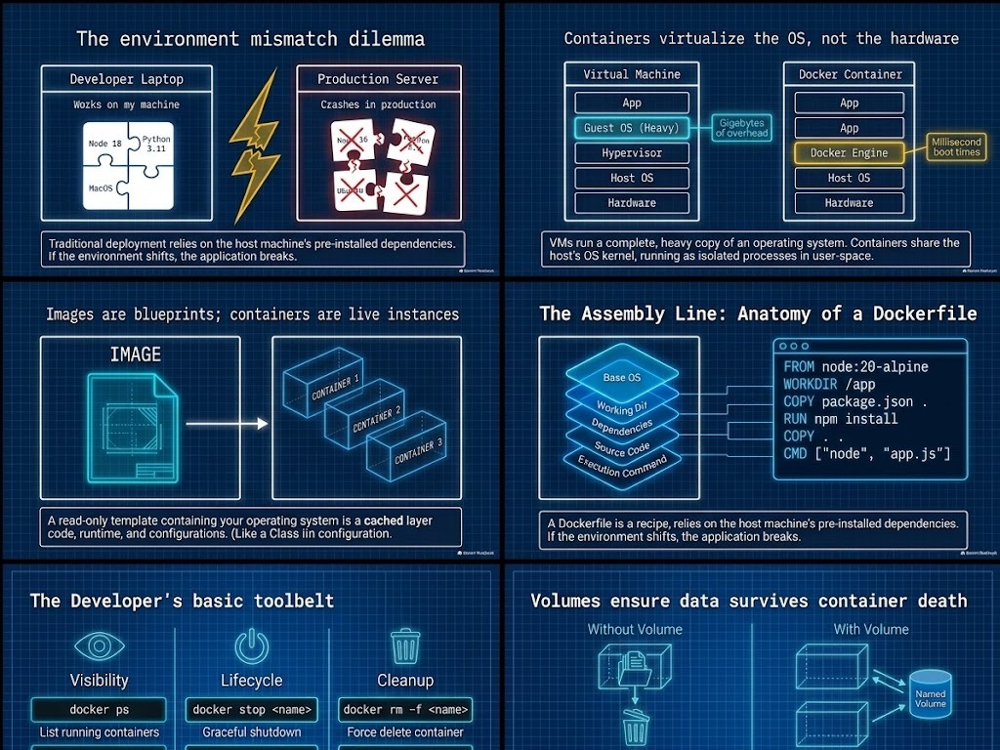
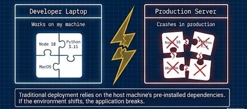
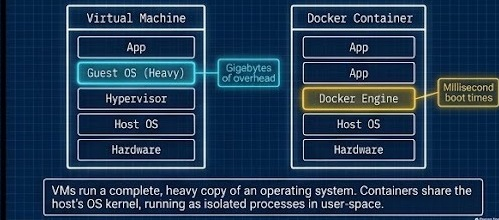
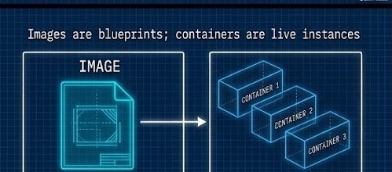
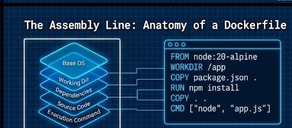
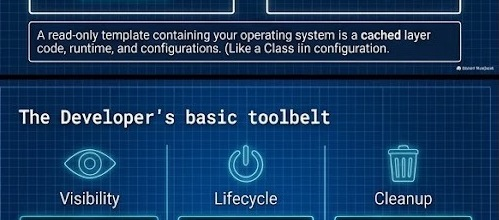
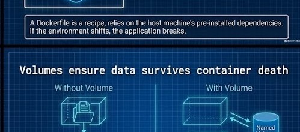
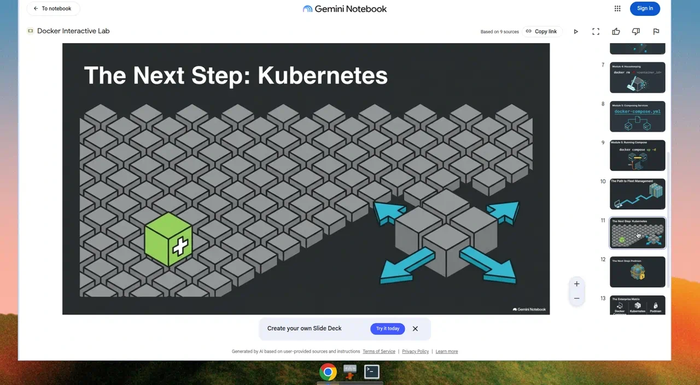

From Local to Fleet
Mastering Modern Containerization







Workshop Hands-On
Follow WORKSHOP.md · Buildx · Compose · port 8080 & 8081
Next: Fleet Orchestration
Compose for local dev · Kubernetes for production fleets
